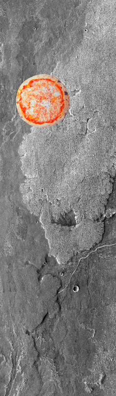
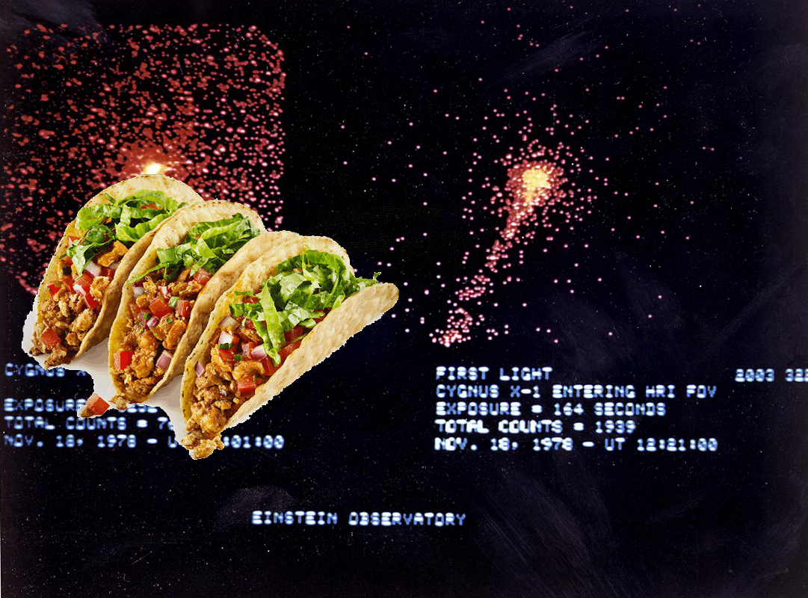
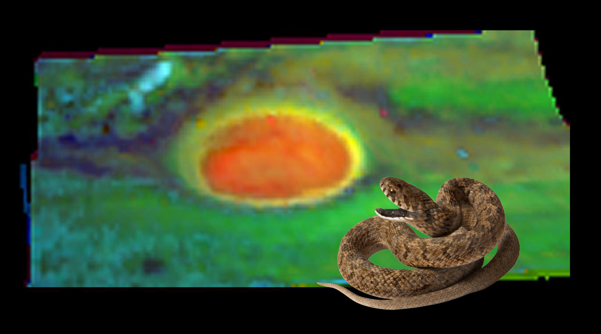

-
Something Strange | Comet Impact Into Jupiter Artist Concept.
-
A Mystery, Something Strange on Blades Across Pluto.
-
An Unexpected Discovery ; Bright and Dark Craters!
-
??? on Doradus Nebula
-
An Unexpected Discovery, An Unexpected Discovery, An Unexpected Discovery on KSC-2009-1974!
-
A Mystery + Galaxy NGC5962.
-
A Mystery – Abedin in Color.
-
A Mystery ; Hubble View of a Nitrogen-Rich Nebula
-
??? ; First Comet Encounter!
-
An Unexpected Discovery @ Banded Moon
-
A Mystery on Whirlpool Galaxy!
-
A Mystery, A Mystery ; Dark Gray Dunes, Bright Orange Dust!
-
Something Strange on Arsia Mons Surface Flow
-
A Mystery ; High Energy Astronomy Observatory (HEAO).
-
A Mystery + Seeing Starlight Through a Planet Rim Artist Concept.
-
An Unexpected Discovery, A Mystery + Dramatic Moon!
-
Something Strange @ Anatomy of a Shooting Star!
-
A Mystery ; Missing Black Holes Found!.
-
A Mystery on Galaxy Evolution Explorer Spies Band of Stars.
-
A Mystery + Earth as Seen from Mars
-
Something Strange ; String of Moons?!
-
An Unexpected Discovery, A Mystery + Pluto and its Moons: Charon, Nix, and Hydra
-
Something Strange on Galaxy Pencil-Thin Profile!
-
Something Strange on The Mark of a Dying Star
-
Something Strange | Peering Closely at the Heart of Pluto
-
Something Strange + Young Stars at Home in Ancient Cluster.
-
A Mystery @ Most Detailed Image of the Crab Nebula
-
An Unexpected Discovery @ A Nebula by Any Other Name!
-
 An Unexpected Discovery, Something Strange on Ring Shapers!
An Unexpected Discovery, Something Strange on Ring Shapers! -
 Something Strange, Something Strange on Galaxy Messier 83
Something Strange, Something Strange on Galaxy Messier 83 -
Something Strange – Ammonia Ice near Jupiter Great Red Spot
-
A Mystery on Missing Black Holes Found!.
-
An Unexpected Discovery @ Probing Saturn Atmosphere!
-
 A Mystery, Something Strange + Massive Star Goes Out With a Whimper Instead of a Bang.
A Mystery, Something Strange + Massive Star Goes Out With a Whimper Instead of a Bang. -
An Unexpected Discovery ; Infrared Images of Saturn Poles!
-
An Unexpected Discovery on Jagged Horizon on Rosetta Destination Comet!
-
A Mystery | Assembly Line of Stars.
-
 Something Strange + Hubble sniffs out a brilliant star death in a “rotten egg” nebula
Something Strange + Hubble sniffs out a brilliant star death in a “rotten egg” nebula -
A Mystery | Hubble’s Hidden Galaxy
-
 Something Strange on How Warm is Mars?
Something Strange on How Warm is Mars? -
Something Strange @ Storms in Saturn Atmosphere!
-
 Something Strange ; Bubbly Little Star.
Something Strange ; Bubbly Little Star. -
 Something Strange @ Eagle Nebula Flaunts its Infrared Feathers
Something Strange @ Eagle Nebula Flaunts its Infrared Feathers -
 Something Strange – Neptune - Dark Feature
Something Strange – Neptune - Dark Feature